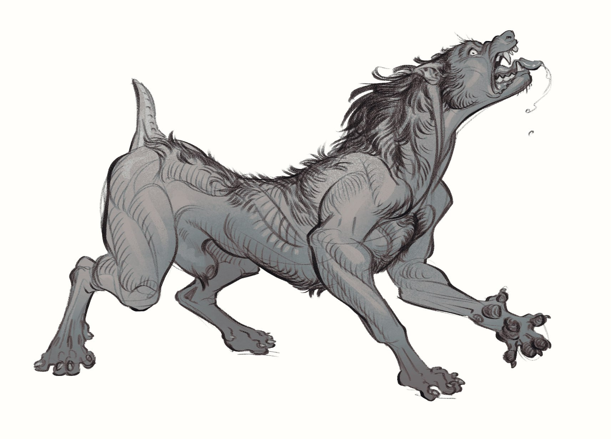

These field notes contain graphic descriptions of anatomical transformations that may not be suitable for all audiences. You must be 18 years or older to view this content.
Desktop Recommended
×
This site was built for use on desktop browsers, not for mobile devices.
Lycanthrope Transformation Study
Field Observations of Subject #247
May 4, 2025 - Full Moon
Show Annotations
Censor Sensitive Info
All Anatomical Annotations
×

Anatomical depiction by
Field Artist @noegenhed
Canine Dentition Development
The transformation begins with elongation of canine teeth, growing up to 3x their normal length. Molars sharpen and adapt for tearing flesh rather than grinding vegetation.
Note: Subject experiences intense oral pain during this phase; teeth growth occurs at approximately 2mm per minute.